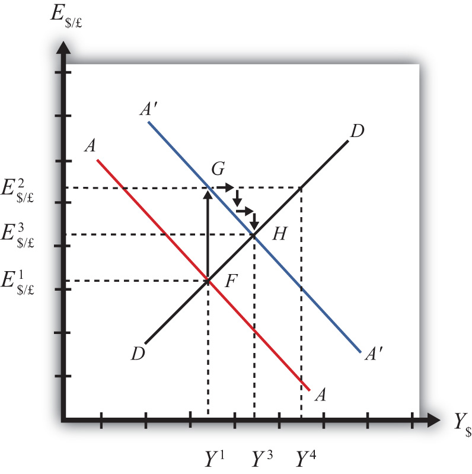

In order to discuss adjustment to the superequilibrium, we must first talk about how an economy can end up out of equilibrium. This will occur anytime there is a change in one or more of the exogenous variables that cause the AA or DD curves to shift. In a real economy, we should expect these variables to be changing frequently. Variables such as interest rates will certainly change every day. A variable such as the average expected future exchange rate held by investors probably changes every minute. Each time an exogenous variable changes, the superequilibrium point will shift, setting off behavioral responses by households, businesses, and investors that will affect the exchange rate and gross national product (GNP) in the direction of the new superequilibrium. However, as we will indicate below, the adjustment process will take time, perhaps several months or more, depending on the size of the change. Since we should expect that as adjustment to one variable change is in process, other exogenous variables will also change, we must recognize that the superequilibrium is really like a moving target. Each day, maybe each hour, the target moves, resulting in a continual adjustment process.
Although an equilibrium may never be reached in the real-world economy, the model remains very useful in understanding how changes in some variables will affect the behavior of agents and influence other variables. The model in essence offers us the opportunity to conduct experiments in simplified settings. Changing one exogenous variable and inferring its effect is a comparative statics experiment because of the ceteris paribus assumption. Ceteris paribus allows us to isolate one change and work through its impact with certainty that nothing else could influence the result.
Below, we’ll consider adjustment to two changes: a reduction in investment demand, which shifts the DD curve, and an increase in foreign interest rates, which shifts the AA curve.
Consider adjustment to a decrease in investment demand. Begin with an original superequilibrium, where DD crosses AA at point F with GNP at Y$1 and exchange rate at E$/£1. When investment decreases, ceteris paribus, the DD curve shifts to the left, as was shown in Chapter 20 "The AA-DD Model", Section 20.3 "Shifting the DD Curve". This shift is shown in Figure 20.9 "Effects of an Investment Demand Decrease in the AA-DD Model" as a shift from DD to D′D′.
Figure 20.9 Effects of an Investment Demand Decrease in the AA-DD Model

The quick result is that the equilibrium shifts to point G, GNP falls to Y$3, and the exchange rate rises to E$/£3. The increase in the exchange rate represents a depreciation of the U.S. dollar value. However, this result does not explain the adjustment process, so let’s take a more careful look at how the economy gets from point F to G.
Step 1: When investment demand falls, aggregate demand falls short of aggregate supply, leading to a buildup of inventories. Firms respond by cutting back supply, and GNP slowly begins to fall. Initially, there is no change in the exchange rate. On the graph, this is represented by a leftward shift from the initial equilibrium at point F (Y$1 to Y$2). Adjustment to changes in aggregate demand will be gradual, perhaps taking several months or more to be fully implemented.
Step 2: As GNP falls, it causes a decrease in U.S. interest rates. With lower interest rates, the rate of return on U.S. assets falls below that in the United Kingdom and international investors shift funds abroad, leading to a dollar depreciation (pound appreciation)—that is, an increase in the exchange rate E$/£. This moves the economy upward, back to the AA curve. The adjustment in the asset market will occur quickly after the change in interest rates, so the leftward shift from point F in the diagram results in adjustment upward to regain equilibrium in the asset market on the AA curve.
Step 3: Continuing reductions in GNP caused by excess aggregate demand, results in continuing decreases in interest rates and rates of return, repeating the stepwise process above until the new equilibrium is reached at point G in the diagram.
During the adjustment process, there are several other noteworthy changes taking place. At the initial equilibrium, when investment demand first falls, aggregate supply exceeds demand by the difference of Y$2 − Y$A. Adjustment in the goods market will be trying to reachieve equilibrium by getting back to the DD curve. However, the economy will never get to Y$A. That’s because the asset market will adjust in the meantime. As GNP falls, the exchange rate is pushed up to get back onto the AA curve. Remember, that asset market adjustment takes place quickly after an interest rate change (perhaps in several hours or days), while goods market adjustment can take months. When the exchange rate rises, the dollar depreciation makes foreign goods more expensive and reduces imports. It also makes U.S. goods cheaper to foreigners and stimulates exports, both of which cause an increase in current account demand. This change in demand is represented as a movement along the new D′D′ curve. Thus when the exchange rate rises up to E$/£2 during the adjustment process, aggregate demand will have risen from Y$A to Y$B along the new D′D′ curve. In other words, the “target” for GNP adjustment moves closer as the exchange rate rises. In the end, the target for GNP reaches Y$3 just as the exchange rate rises to E$/£3.
Consider adjustment to an increase in the foreign interest rate, i£. Begin with an original superequilibrium where DD crosses AA at point F with GNP at Y1 and exchange rate at E$/£1. When the foreign interest rate increases, ceteris paribus, the AA curve shifts upward, as was shown in Chapter 20 "The AA-DD Model", Section 20.5 "Shifting the AA Curve". This shift is shown in Figure 20.10 "Effects of an Increase in Foreign Interest Rates in the AA-DD Model" as a shift from AA to A′A′.
Figure 20.10 Effects of an Increase in Foreign Interest Rates in the AA-DD Model
The quick result is that the equilibrium shifts to point H, GNP rises to Y3, and the exchange rate rises to E3. The increase in the exchange rate represents a depreciation of the U.S. dollar value.
The convenience of the graphical approach is that it allows us to quickly identify the final outcome using only our knowledge about the mechanics of the AA-DD diagram. However, this quick result does not explain the adjustment process, so let’s take a more careful look at how the economy gets from point F to H.
Step 1: When the foreign interest rate (i£) rises, the rate of return on foreign British assets rises above the rate of return on domestic U.S. assets in the foreign exchange market. This causes an immediate increase in the demand for foreign British currency, causing an appreciation of the pound and a depreciation of the U.S. dollar. Thus the exchange rate (E$/£) rises. This change is represented by the movement from point F to G on the AA-DD diagram. The AA curve shifts up to reflect the new set of asset market equilibriums corresponding to the now-higher foreign interest rate. Since the foreign exchange market adjusts very swiftly to changes in interest rates, the economy will not remain off the new A′A′ curve for very long.
Step 2: Now that the exchange rate has risen to E$/£2, the real exchange has also increased. This implies foreign goods and services are relatively more expensive while U.S. G&S are relatively cheaper. This will raise demand for U.S. exports, curtail demand for U.S. imports, and result in an increase in current account and thereby aggregate demand. Note that the new equilibrium demand at exchange rate is temporarily at GNP level Y4, which is on the DD curve given the exchange rate E$/£2. Because aggregate demand exceeds aggregate supply, inventories will begin to fall, stimulating an increase in production and thus GNP. This is represented by a rightward shift from point G (small arrow).
Step 3: As GNP rises, so does real money demand, causing an increase in U.S. interest rates. With higher interest rates, the rate of return on U.S. assets rises above that in the United Kingdom and international investors shift funds back to the United States, leading to a dollar appreciation (pound depreciation), or the decrease in the exchange rate (E$/£). This moves the economy downward, back to the A′A′ curve. The adjustment in the asset market will occur quickly after the change in interest rates. Thus the rightward shift from point G in the diagram results in quick downward adjustment to regain equilibrium in the asset market on the A′A′ curve, as shown.
Step 4: Continuing increases in GNP caused by excess aggregate demand, results in continuing increases in U.S. interest rates and rates of return, repeating the stepwise process above until the new equilibrium is reached at point H in the diagram.
During the adjustment process, there are several other noteworthy changes taking place. At point G, aggregate demand exceeds supply by the difference Y4 − Y1. Adjustment in the goods market will be trying to reachieve equilibrium by getting back to the DD curve. However, the economy will never get to Y4. That’s because the asset market will adjust during the transition. As GNP rises, the exchange rate is gradually pushed down to get back onto the A′A′ curve. When the exchange rate falls, the dollar appreciation makes foreign goods cheaper, raising imports. It also makes U.S. goods more expensive to foreigners, reducing exports—both of which cause a decrease in current account demand. This change in demand is represented as a movement along the DD curve. Thus when the exchange rate falls during the adjustment process, aggregate demand falls from Y4 along the DD curve. In other words, the “target” for GNP adjustment moves closer as the exchange rate falls. In the end, the target for GNP reaches Y3 just as the exchange rate falls to E$/£3.
Jeopardy Questions. As in the popular television game show, you are given an answer to a question and you must respond with the question. For example, if the answer is “a tax on imports,” then the correct question is “What is a tariff?”